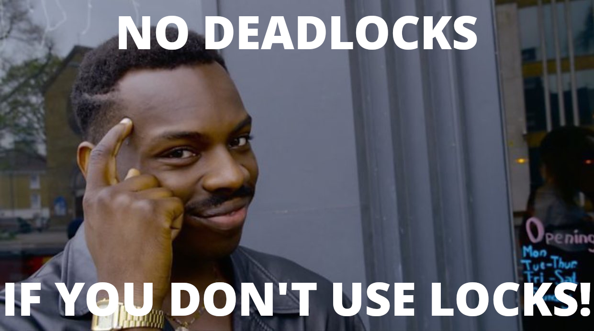

I’ve been writing some massively concurrent code for mgmt lately. The concurrency makes it incredibly bug prone. In this case it’s usually races or deadlocks. I’ve got a new trick to make the process more pleasant.
I’m sure many of you have written some code like this before:
// just a small excerpt
for {
select {
case <-someEvent:
// some awesome thing happened!
case <-ctx.Done():
return ctx.Err()
}
}
And during debugging, you might have gotten frustrated and added some printf’s:
for {
fmt.Printf("XXX: about to select...\n")
select {
case <-someEvent:
fmt.Printf("XXX: received event!\n")
// some awesome thing happened!
case <-ctx.Done():
fmt.Printf("XXX: errored with: %+v\n", err)
return ctx.Err()
}
}
I know I’ve done this a lot. In fact, I’ve occasionally added some permanent logging in some of these situations. The problem is, that most of the time, when I’m running in these fast loops, I don’t care about seeing those messages. I usually only care about those messages when something is stuck! Otherwise it’s just noise.
|  |
I’d like to add a printf, but I’d only like it to appear if I’m still waiting
for that select for more than some number of seconds. When I “get past” the
select, I don’t care about printing that message anymore. I wrote up a small
utility library to do this. Here’s what the new code looks like:
import "github.com/purpleidea/mgmt/util"
for {
bt := util.BlockedTimer{Seconds: 2}
defer bt.Cancel() // free memory (prevent one goroutine leak)
bt.Printf("XXX: about to select...\n")
select {
case <-someEvent:
bt.Cancel() // no need to print anymore!
fmt.Printf("XXX: received event!\n")
// some awesome thing happened!
case <-ctx.Done():
fmt.Printf("XXX: errored with: %+v\n", err)
return ctx.Err()
}
}
We first setup the timer, and in this example I wanted two seconds. Just as in
the context package, we need to make sure to free
it when done so that we don’t leak goroutines. As soon as the bt.Printf
statement is run, then a timer for that Printf starts. If we Cancel it
before those two seconds are up, then nothing is printed. If we delay too long,
then we’ll see the message, and we’ll know which part of our code is blocking!
If you’d prefer to specify an exact duration instead of a time in seconds, then
use the Duration field instead. That will work how you expect. The Seconds
field is meant as a shorthand for the most common use-case.
I wrote the utility to be slightly more generic. Instead of Printf you can
also use Run. The latter takes an arbitrary function to run instead. This is
useful for when you want to run a t.Logf when you’re inside of a test, or in
some other scenario. For testing this library, I actually use Run and a
channel signal. There are many other uses for run as well.
After you’ve initialized the BlockedTimer struct, you can call a mixture of
Printf and Run as many times as you like. They’ll each get their own timer,
and they’ll each run individually. When you run the Cancel method, all of
those that are still waiting will shutdown.
It’s completely safe to call this concurrently. You can call the Cancel
function as many times as you’d like. If you’ve called Printf or Run then
you should definitely call Cancel at least once to avoid a goroutine leak.
The copying semantics are identical to the sync.Mutex package in that if you don’t create this as a pointer, then it “must not be copied after first use”.
It’s pretty hard to break this! Have fun!
The code is available here. I hope you find it as useful in your projects as I have.
The time package has an AfterFunc(d Duration, f func()) *Timer
function included. This is almost identical to what I’ve implemented. The main
downside is that you can only have a single action, and it’s much more verbose.
It’s not entirely clear to me from the docs which parts are thread-safe and
which aren’t, but if you want to do it, it might look like this:
import "time"
for {
af := time.AfterFunc{time.Duration(2) * time.Second, func() { fmt.Printf("XXX: about to select...\n") } }
defer af.Stop()
select {
case <-someEvent:
af.Stop()
fmt.Printf("XXX: received event!\n")
// some awesome thing happened!
case <-ctx.Done():
fmt.Printf("XXX: errored with: %+v\n", err)
return ctx.Err()
}
}
In one of the pieces of code I’m working on, I have a bunch of workers that all start up. They are arranged into a DAG. A worker that is slow or blocked will prevent anyone downstream of it from starting up. As a result, I can use this library to notify the user which particular workers still haven’t initialized if we’re waiting for more than a few seconds. This is a much better user experience than wondering if you have a deadlock in your code.
An important reminder: If you’re only interested in debugging scenarios, you can also rely on stacktraces to find out where you are blocked. In my debugging golang programs post, you will remember that at any point, you can press Control+Backslash and you should get a full stacktrace of where each goroutine is waiting.
I hope you enjoyed this. Please leave me a comment if this taught you something new!
Happy Hacking,
James
You can hire James and his team at m9rx corporation.
You can follow James on Mastodon for more frequent updates and other random thoughts.
You can follow James on Twitter for more frequent updates and other random thoughts.
You can support James on GitHub if you'd like to help sustain this kind of content.
You can support James on Patreon if you'd like to help sustain this kind of content.
Your comment has been submitted and will be published if it gets approved.
Click here to see the patch you generated.
{kind=link}
Comments
Nothing yet.
Post a comment